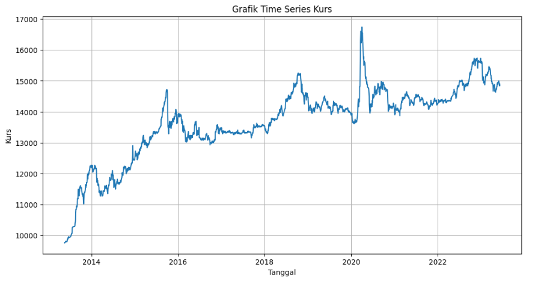

Featured Projects

Supply Chain Analysis
This project is the process of collecting, analyzing, and interpreting data about a company's supply chain in order to improve its efficiency and effectiveness.

Music Recommendation System
To develop a music recommendation system that suggests songs based on the user's current mood.

Forecasting IDR to USD Rates using SARIMA Model
Using historical Bank of Indonesia data to predict exchange rates between IDR to USD using SARIMA Modelling.